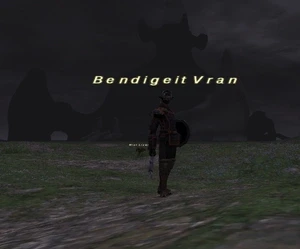

Level 75 reference · Zenith rules
|
Job: Notorious Monster |
 |

|
Zone |
Level |
Drops |
Steal |
Spawns |
Notes |
|
14? |
|
1 |
A, L | ||
|
HP = Detects Low HP; M = Detects Magic; Sc = Follows by Scent; T(S) = True-sight; T(H) = True-hearing JA = Detects job abilities; WS = Detects weaponskills; Z(D) = Asleep in Daytime; Z(N) = Asleep at Nighttime | |||||

Notes:
- Timed Spawn in the map sections between the west side of the Crag of Dem and the mountain at left center of the map, encompassing (G-6)/(H-6)/(I-6)/(F-7)/(H-7)/(I-7)/(H-8)/(I-8). This is roughly the same spawn area as for Rampaging Ram and Steelfleece Baldarich.
- Spawns during Nighttime between 17:00-6:00 hours, only during a New Moon; though the Respawn Time is currently unknown, these conditions would place it at a minimum of somewhere around 72 hours Earth time.
- Has around 800HP.
- Has an Additional Effect of Evasion Down on physical attacks.
- Can spawn more than once during a single New Moon phase.
- Duoed as 14sam and 14bst. BST charmed 2 mad sheep then BST and SAM both attacked it the rest of the fight. Things might get kind of close, so best have a /whm sub for emergencies.
Adapted from Eden Wiki: Bendigeit Vran · Contributors and history · CC BY-SA 4.0. Revision 46878. Layout, links and optional background text adapted for Zenith.